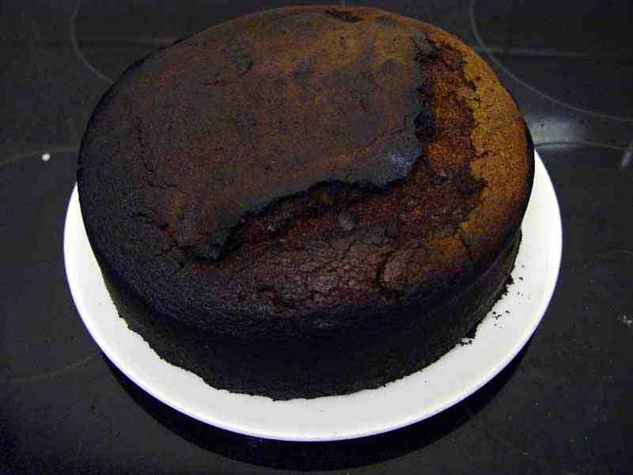

|
|
TURBO OVEN woes. By Lee Davison. |
|
Both the ovens on my cooker have fan assist. This is a good thing if you're cooking pterodactyl, or brontosaur, as it means they would be done before the next ice age. However, it's not such a good thing if you're baking a cake using pre-TURBO OVEN instructions, as using those settings they give will crisp the outside before the inside is done.
Unfortunately the bit of the cake I could see through the door was the less burnt bit. Meanwhile the rest of it was quietly turning into something that looks like a re-entry sheild that's been given a very hard time.
It's actually not bad inside, if anything the insides could have done with a bit longer.
Let's hope that the goats like their chocolate sponge crispy on the outside. Let's also hope that I don't concuss one of them when I throw this over their fence.
| Last page update: 6th July, 2003. |
e-mail me
 |